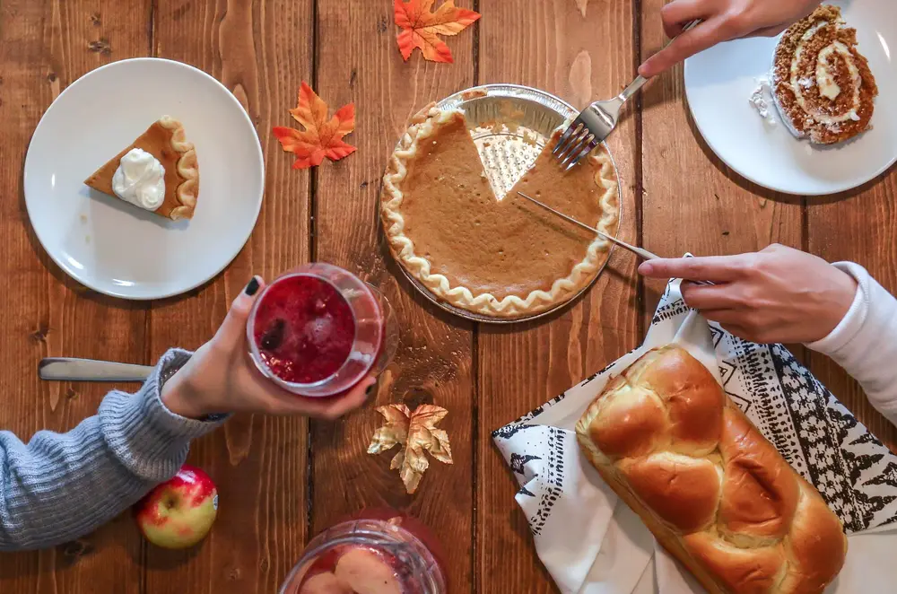

Articles / Tips & trends
Stay thankful with thanksgiving day!
2022-11-29 · News, Tips and Trivia

When the end of November rolls in and the air starts turning chilly, it’s time to gather around with your family and friends for a Thanksgiving feast! Aside from Christmas, Thanksgiving is one of the most important holidays in America – during the holiday season, throughout the country wafts the aroma of turkey, squash, berries and more!
Want to learn more about the origins and traditions of Thanksgiving? Read on to find out!

What is Thanksgiving?
Thanksgiving day, celebrated mainly in the US, Canada and some other countries, began as a holiday to give thanks to the yearly harvest.
In the US, Thanksgiving is said to begin in the 1600s, brought in by English settlers arriving in New England.
The native Wampanoag tribe helped the pilgrims survive the harsh winter by teaching them how to find/grow food, and the pilgrims returned by celebrating the harvest with the tribe.
The celebration started as a New England tradition in the 1660s, and grew to become a nationwide holiday in the late 1700s. Nowadays it’s celebrated on the last Thursday of November in the US, but Canada and other countries celebrate it on different dates!
What do you do in Thanksgiving?
Celebrate with food of course! Thanksgiving in the US also includes church services, but the most important part of the celebration would be a large dinner with your family and friends.
A classic Thanksgiving dinner often includes foods native to the US, including turkey, squash, pumpkin, cranberries and more!
Some popular dishes include roast turkey with stuffing and cranberry sauce, baked potatoes and squash, pumpkin pies, green bean casseroles…delicious!

What about drinks?
Much like any other party, it’s bottoms up if you fancy some alcohol! Fruity cocktails and apple ciders can spice up any Thanksgiving dinner, while mulled wine can be enjoyed all the way until Christmas.
What if you’re underage, or a teetootaller? There’s still plenty of options!
Pumpkin drinks
It’s not just about Halloween, pumpkins are also a staple in this holiday! Can’t get enough of pumpkin pies? Why not whip up some pumpkin-flavoured drinks?
Pumpkin Spice Lattes may be the queen of autumn drinks, but pumpkin milkshakes and hot choc also work too!
And that wraps things up! Enjoy the holidays with your family and friends, and try impressing them with some homemade delicious drinks!